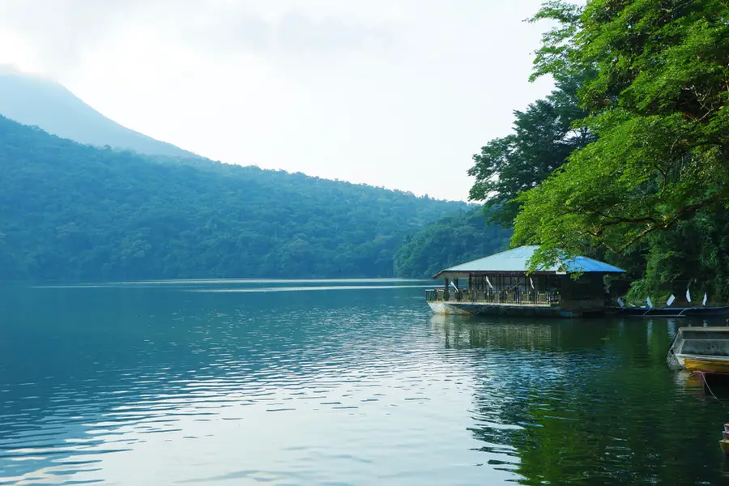

Freshwater
The lakes of Sorsogon
Sorsogon's volcanic history left a legacy of beautiful crater lakes and enclosed lagoons — serene, accessible, and surrounded by old-growth forest.

Bulusan, Sorsogon
Bulusan Lake
Set at the foot of Bulusan Volcano within the Natural Park, Bulusan Lake occupies a volcanic depression formed by ancient eruptions. Its waters are remarkably clear and cool, surrounded by towering forest.
Visitors can kayak or row across the mirror-like surface. The lake's shoreline is home to numerous bird species — kingfishers, herons, and rare pittas — making it equally loved by birdwatchers and hikers on the summit trail.
- Kayaking and rowing on the lake
- Birdwatching along the forested shoreline
- Trailhead for the Bulusan summit trek
- Picnicking and nature photography
Hot Springs
Geothermal springs nearby
San Benon Hot Spring
Natural geothermal pools inside the Natural Park. Water temperature averages 38–42°C — perfect after a day of trekking.
Buhang Hot Spring
A more secluded spring deeper within the park, reached via forest trail. Known for higher temperatures and pristine surroundings.
Boiling Crater Lake
On the upper slopes of Bulusan, a small actively bubbling volcanic lake steams continuously — dramatic evidence of geothermal forces below.